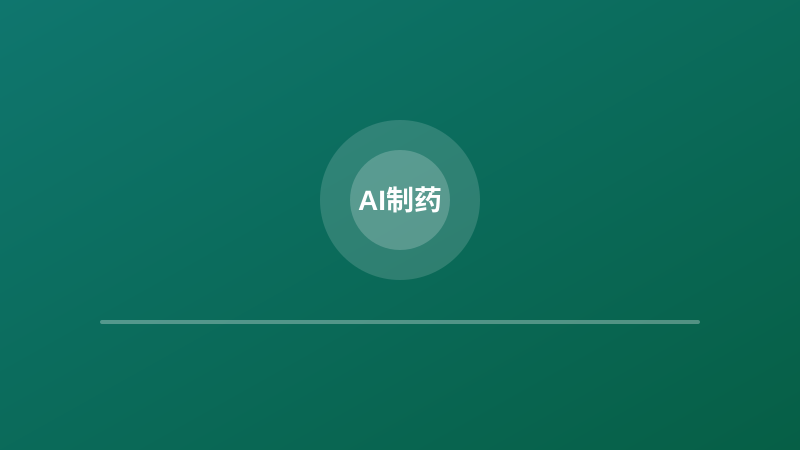
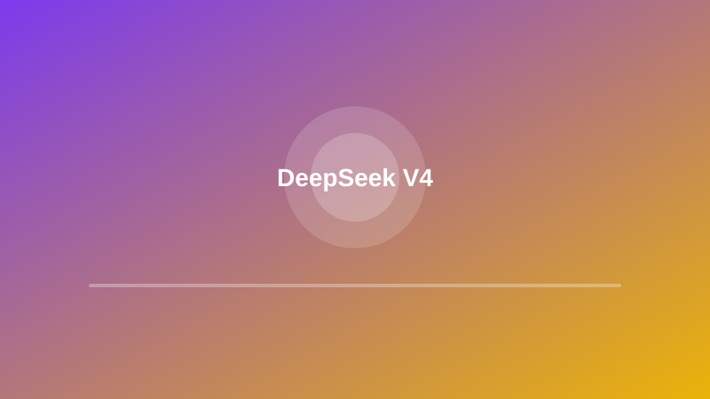
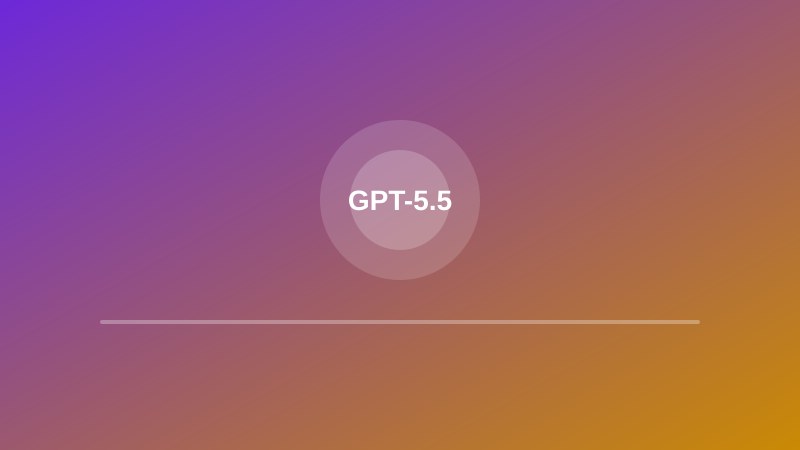
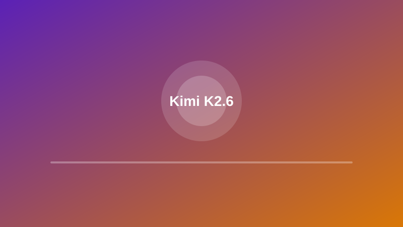
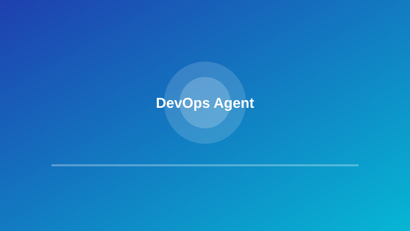

产业落地
京津冀首座具身智能超级工厂在亦庄正式规模化量产
来源：国际科技创新中心 · 2026年04月21日
领益智造北京具身智能超级工厂举行首批人形机器人下线仪式，具身天工Ultra、具身天工3.0等前沿机型正式亮相。这标志着人形机器人从实验室走向规模化生产，为智能制造产业提供了可复制的量产范式。
查看原文 →具身智能超级工厂规模化量产，国家电网启动近100亿具身智能设备采购；天猫超市发布AI超市智能体"超喵1.0"，采购选品效率缩短至10分钟；OpenAI发布GPT-5.5，DeepSeek V4开源上线；谷歌云推出企业级AI智能体工具，Cloudflare发布智能体云全套产品。
领益智造北京具身智能超级工厂举行首批人形机器人下线仪式，具身天工Ultra、具身天工3.0等前沿机型正式亮相。这标志着人形机器人从实验室走向规模化生产，为智能制造产业提供了可复制的量产范式。
查看原文 →2026北京亦庄半程马拉松采用"人机共跑"模式，超百支人形机器人赛队与万名人类选手同场竞技。"闪电"机器人以50分26秒夺冠，打破人类半马世界纪录，展示了具身智能在运动控制和能量管理上的突破性进展。
查看原文 →国家电网有限公司内部印发《2026年具身智能发展规划》，计划今年集中采购各类具身智能设备，总投资规模近100亿元。这是国内首个大规模行业应用计划，将为机器人产业打开新的应用空间，加速从实验室到工业场景的落地。
查看原文 →淘工厂发布"淘工厂星火"3.0版本，天猫超市发布"超喵1.0"，覆盖从商品规划到供应链管理的全链路。AI赋能商家成为电商平台重要方向，阿里正在抢占B端AI基建先发红利，为中小商家提供全天候经营专家服务。
查看原文 →全国首个落地应用的AI超市智能体，涵盖16个子Agent，覆盖全链路经营。"超喵"可在新品上线前模拟销售结果，将原本需要数周的采购选品流程缩短至10分钟，从"经验判断"转向"AI经营"，解决零售业痛点。
查看原文 →由NVIDIA OpenShell运行时提供安全保障的创意AI智能体可生成符合品牌风格的内容，重塑了品牌创建、个性化和激活内容的方式。这标志着AI从辅助工具升级为自主创意伙伴，为营销行业带来生产力革命。
查看原文 →
靶点识别是药物研发的起点和最关键一步。虽然人类基因组包含约2万个蛋白编码基因，但目前被认为"可成药"的仅数百个。AI算法正在加速靶点发现与评估，将长达十几年的新药研发长征缩短，为精准医疗提供新路径。
查看原文 →这款深度理解化学和基因组学、直接连通数十种科研工具的AI模型，在专业测试中击败了95%人类专家，已悄然进入全球顶尖药企的研发流程。它将新药发现从"大平台驱动"推向"个人开发"时代，降低了生命科学研究的门槛。
查看原文 →被誉为行业"大模型黄埔军校"的实践，建立了一套可复制、可扩展的生物智能人才培养与攻关范式。通过有组织的科研，中国力量能够在全球生命科学AI竞赛中占据一席之地，推动生命科学从经验科学向工程化科学转变。
查看原文 →• AlphaFold | HuggingFace Protein Models - DeepMind蛋白质结构预测模型，革命性突破生物学研究
• Chemprop - 分子性质预测的消息传递神经网络，用于药物发现
• Microsoft Protein Sequence Models - 微软蛋白质序列表示学习模型
• AlphaFold3 PyTorch - AlphaFold3的PyTorch实现，支持蛋白质-配体复合物预测

DeepSeek V4预览版开源上线后，第一波第三方榜单测评结果出炉。多家测评显示，DeepSeek V4性能尤其在代码任务上冲进开源第一梯队，同时以"百万级上下文+低价"优势，为开发者提供了高性价比的大模型选择。
查看原文 →
OpenAI发布代号"Spud"的GPT-5.5，是自GPT-4.5以来首个从零重新训练的基础模型。在Agent编码、计算机操控和深度推理上实现质的飞跃，100万token上下文与自我优化能力，标志着大模型进入新的能力阶段。
查看原文 →
月之暗面开源发布Kimi K2.6模型，在通用智能体、代码编写和视觉理解等综合能力上实现全面跃升。支持300个AI员工跑满4000步不崩，刷新多项业界权威评测榜单，为Agent集群应用提供了强大的基础模型支持。
查看原文 →Cloudflare Agents Week 2026圆满结束，发布了从计算和安全性，到智能体工具箱、平台工具，以及新兴的智能体Web的全套产品。为智能体云提供了完整的基础设施支持，推动Agent从概念走向大规模生产部署。
查看原文 →
亚马逊云科技宣布DevOps Agent正式可用，这是一款由生成式AI驱动的智能助手，旨在帮助开发者和运维人员排查问题、分析部署，并在AWS环境中自动化执行运维任务。将运维效率提升到新的水平，减少人工干预。
查看原文 →天鹜科技发布对话式蛋白质研发智能体MatwingsVenus™（晓鹜™）。用户通过对话智能体完成行业研究、标签数据库检索、蛋白质设计、自动化实验验证、专家在线咨询全流程，让以往高门槛的工作向个人打开更多落地可能性。
查看原文 →• LangChain | HuggingFace LLMs - 构建LLM应用的框架，支持Agent工作流
• AutoGen - 微软多智能体对话框架，支持复杂任务自动化
• AutoGPT - 自主AI Agent，可自动完成复杂任务链
• LlamaIndex - 数据框架，为LLM应用提供上下文增强